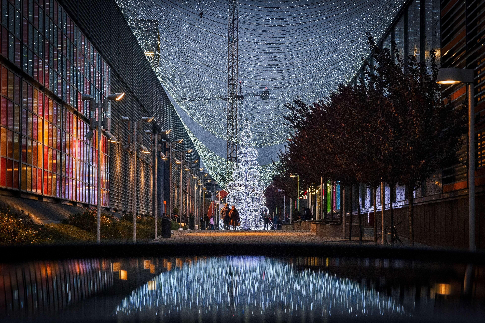

# Куда отправиться этой зимой?
Путешествия зимой имеют свою прелесть. Зимой билеты стоят дешевле, поток туристов меньше, без труда можно остановиться где угодно и попасть в музеи без очередей. И, конечно, когда на улицах родного города серость, гололед и ранние сумерки, так приятно отправиться туда, где еще не был, наслаждаться новыми впечатлениями и прекрасной атмосферой. Мы собрали для вас лучшие страны и города для зимних путешествий в этой статье.
# Где пообедать в Париже?
Одна из самых популярных среди туристов европейских столиц готова порадовать вас не только архитектурой и обилием магазинов, но и открыть свои кулинарные секреты. Боитесь увлечься и превысить свой финансовый лимит? Не стоит – наша подборка поможет вам насладиться всеми прелестями современной французской кулинарной культуры и приятно удивит демократичными ценами и неповторимой атмосферой.
# Города и места, где снимались культовые фильмы
Для кассовых и известных фильмов подбираются самые красивые и зрелищные декорации, и зачастую речь идет не о спецэффектах. Горы и побережья, деревни и тайные места в городах – все это доступно сегодня и для обычных туристов, которые могут побывать там, где снимались шедевры.
# Туристический гид по Будапешту
Будапешт прекрасен в любое время года, но только в летнее время вы сможете насладиться неспешной прогулкой на катере по Дунаю. Также не упустите возможность попробовать национальные блюда – оценить все достоинства венгерской кухни вы сможете в бесчисленных кафе и ресторанчиках, рассыпанных по набережной. Кроме этого, вас ждут комфортные и современные гостиницы, способные порадовать даже самых привередливых гурманов рынки и опьяняющие ароматами кофейни.
# Лучшие отели для отдыха
Наши соотечественники любят всеобъемлющую систему. И как вы можете не любить его, если вы можете прекрасно отдохнуть, пляжи, гастрономические просторы и часто алкоголь для разумной цены? Во-первых, все инклюзивные отели в Турции приходят на ум. Они недороги, и формат вовлекает еду и напитки в любое время дня и ночи в неограниченном количестве.
# Загадочные места мира
Любой путешественник мечтает о самом запоминающемся отдыхе. Бродить по давно известным маршрутам, которые есть в каждом путеводителе, не очень весело. Но где же искать оригинальные идеи, куда ехать? Между тем, в мире существует множество мистических и загадочных мест, от которых мурашки по коже. Мало того, что многие из них отличаются красотой и интересной историей, так еще и славятся необъяснимыми явлениями. Если хотите буквально прикоснуться к тайне, ощутить всю прелесть атмосферы и побывать в новом нетипичном месте, читайте нашу статью.